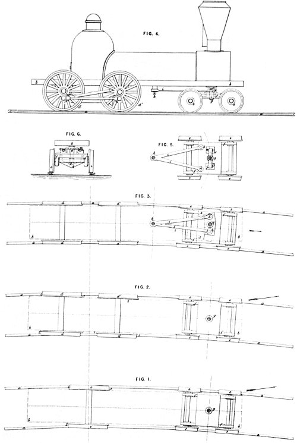
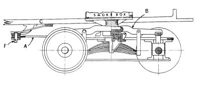
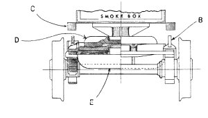
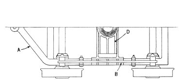
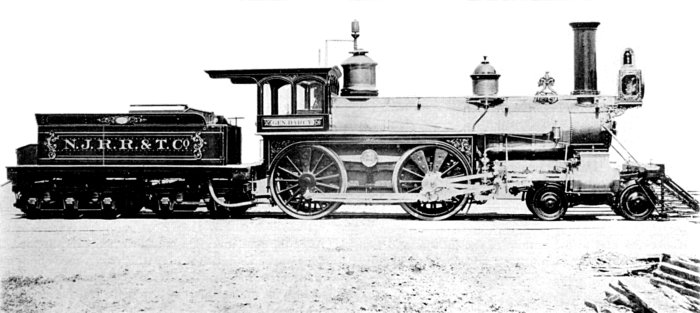
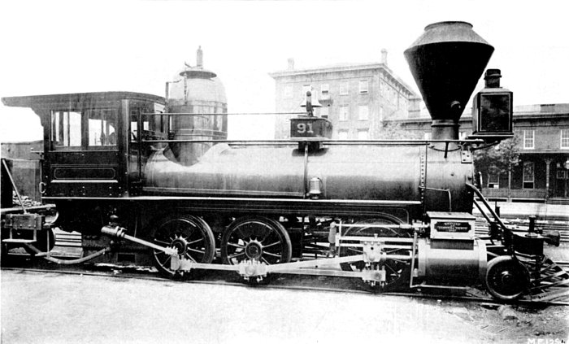
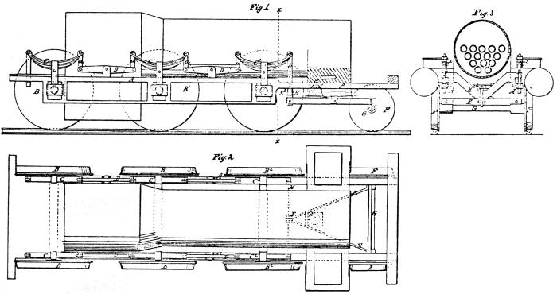
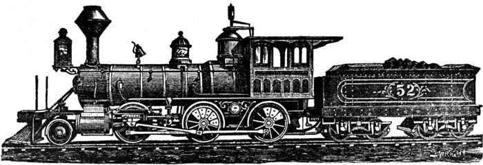

[p118]
INTRODUCTION OF
THE LOCOMOTIVE SAFETY TRUCK
Pioneer railroading was dangerous. With increased speed and density of traffic came an increase in catastrophic wrecks that forced operators to take heed for the safety of their passengers and freight. This safety was painfully achieved through the slow process of improving equipment part by part.
Antedating such spectacular post-Civil War advances as the steel rail, automatic coupler, and airbrake, was the invention of the safety truck for locomotives. Intended to lead the bobbing, weaving locomotive around curves on the rough track of the early roads, it did much to reduce the all too numerous derailments that were a major cause of accidents.
The Author: John H. White, is associate curator, in charge of land transportation, in the Smithsonian Institution’s Museum of History and Technology, United States National Museum.
American railroads of the early 19th century were cheaply and hastily built. They were characterized by inferior roadbeds, steep grades, sharp curves, and rough track. In spring, poor drainage and lack of ballast might cause the track to sink into the soggy roadbed and produced an unstable path. In winter this same roadbed could freeze into a hard and unyielding pavement on which the rolling stock was pounded to pieces.
In those pioneering times the demand for new roads left little capital to improve or expand existing lines; therefore equipment was needed that could accommodate itself to the existing operating conditions.
The first locomotives used in this country had been imported from England. Designed for well-ballasted track with large-radius curves and gentle gradients, they all too frequently left the rails, and the unsuitability of the essentially rigid British design soon became apparent.
The challenge posed by the American roadbed was met by American mechanics. By the mid-1830’s a distinctive American locomotive had evolved that might best be described by the word “flexible.” The basic features of its running gear were a bar frame and equalizing levers to provide vertical relief and a leading truck to provide lateral relief. Of these devices the truck was probably the most important, and more readily than any one component distinguished the American running gear from that used by the British before 1860.
Figure 1.—Design drawing showing the 4-wheel leading truck, developed in 1831 by John B. Jervis, applied to the Brother Jonathan. This locomotive, one of the earliest to use a leading truck, was built in June 1832 by the West Point Foundry Association for the Mohawk and Hudson Rail Road. The truck is attached to the locomotive frame by a center pin, but the forward weight of the locomotive is carried by a roller which bears on the frame of the truck. (Smithsonian photo 36716-a)
It was John B. Jervis who is generally credited with first applying the truck to the locomotive. His design, shown in figure 1, was developed in 1831–32. Its merits quickly became apparent, and by 1835 it [p119] had been universally recognized in this country. The truck successfully led the locomotive around sharp curves, the resultant 3-point suspension enabled the machine to traverse even the roughest of tracks, and, altogether, the design did far less damage to the lightly built U.S. lines than did the rigid, imported engines.1
The truck frame, fabricated from iron straps and castings, was attached to the locomotive by a pin around which it might rotate. At first the weight was received by rollers or chafing pads mounted on the side beams of the truck. However, the friction of these bearing surfaces and their location at a considerable distance from the center pin combined to restrict the free movement of the truck. By the early 1850’s the point of bearing was transferred to the center plate, producing a truck that turned more freely.2

Figure 2.—The 4-wheel Bissell truck as shown in the drawing for British patent 1273, issued May 5, 1857.
|  |  |
|  |
Figure 3.—Typical 4-wheel Bissell Safety truck of 1860. This drawing is based on plate 69 of Alexander L. Holley’s, American and European Railway Practice in the Economical Generation of Steam, New York, 1861. (Smithsonian photo 46946)
For single axle engines this simple form of truck was entirely satisfactory, but it proved less satisfactory for 4- and 6-coupled machines. Also, as train speeds increased, so did the number of derailments. Many of these could be traced to the inability of the engine to negotiate curves at speed. Levi Bissell, a New York inventor who investigated this problem in the 1850’s, correctly analyzed the difficulty. He observed that when the engine was proceeding on straight tracks the leading truck tended to oscillate and chatter about the center pin, and he noted that it was this action that imparted a fearful pitching motion to the locomotive at speed. The derailments were traced to the action of the truck as the engine entered a curve.
This action can be more easily understood from reference to Bissell’s patent drawing in figure 2. For example, let us say that an 8-wheel engine, fitted with a center-swing truck, enters a right-hand curve. The left truck wheels bear hard against the left rail. The drivers jam obliquely across the track, with the right front and left rear wheels grinding into the rails. As a result, the locomotive tends to leave the track in the direction of the arrow shown on the figure (bottom drawing). It will be noted that the truck center pintle is in fact the fulcrum for this leverage. Under such strain the truck wheels are particularly likely to leave the rails when they encounter an obstruction. Once derailed, the truck would then spin around on the deadly center pin, throwing the locomotive over.
In effect, then, the center pin of the conventional truck extended the rigid wheelbase of the engine, and caused the truck to act much as would a single set of leading wheels fitted rigidly to the engine frame far ahead of the front driving wheels. Bissell proposed to correct the faults of the conventional truck by fitting the locomotives with his invention, the first practical safety truck to be patented. Since the primary requirements were to keep the leading wheel axles at right angles to the rails whether on a straight or curved track, and to allow the driving axles to remain parallel, or nearly so, to the radial line of the curve, he moved the center pin to a point behind the truck and just in front of the forward driving axle. This shortened the wheelbase of the engine and removed the danger of the pintle serving as a fulcrum between the truck and the driving wheels, thus allowing them to assume a comfortable position on a curve.
Since the truck could assume the correct angle when entering curves, it was claimed in the patent specification that, unless all four wheels were simultaneously [p122] lifted off the track, the truck could pass over “quite a considerable obstruction.”3 Bissell further claimed:
In running on either a straight or curved track one of the truck wheels often breaks off, and the truck swivels around on its center pin in consequence, and throws the engine off the track, but with my device one wheel, or even the two wheels on the opposite sides diagonally of the truck might break off and still the truck would not run off, because its position is set and it has no axis of motion around which it could swing….
Figure 4.—A 4-wheel safety truck fitted with A. F. Smith’s swing-bolster centering device. Built by the Hinkley Locomotive Works. From Gustavus Weissenborn, American Locomotive Engineering and Railway Mechanism, New York, 1871, pl. 88.
The other problem Bissell wished to correct was the oscillation and chatter of the leading truck. This was accomplished by a simple centering device in the form of a pair of V-shaped double incline planes (D on fig. 3) situated at the center of the truck frame (A). The lower planes of the pair were fastened to the truck frame and the upper, cast in the form of a bridge, were attached to the locomotive frame (C) by a center plate. But while the portion of the locomotive’s weight assigned to the leading wheels was borne at the center of the truck, as in the conventional design, the center plate was no longer the point of rotation. On a straight track the V’s would be at their bottom position and thus prevent the truck from vibrating.4 When the locomotive entered a curve the planes allowed its forward weight to bear continuously on all four wheels, and at the same time controlled any exaggerated swing caused by centrifugal force.
The centering device is thus explained in the patent specification (figure numbers are omitted):
I therefore obviate this difficulty [the oscillation of the truck] by providing two inclined planes … formed double as shown and of an angle proportioned to the weight of the forward part of the locomotive and the velocity of the same…. The position of the inclines is such that the blocks [V’s] rest in the lowest part of the double inclines when the engine is on a straight track, and on coming onto a curve the inertia of the engine … is expended in going up the inclines, as the truck moves laterally toward the inner part of the curve; and on coming onto a straight line [p123] the blocks, descend to the bottom of the inclines and the engine is prevented from acquiring a sidewise or oscillating motion.
Figure 5.—Detail drawing of the radius-bar truck, patented by William S. Hudson in 1864, as applied to the New Jersey Railroad and Transportation Company No. 44. From Gustavus Weissenborn, American Locomotive Engineering and Railway Mechanism, New York, 1871, pl. 8.
Bissell applied for a U.S. patent on April 23, 1857. His petition was initially denied. A weary debate of several months duration followed between the patent examiner and Bissell’s attorneys.
During this time Bissell was busy promoting the application of his truck even though he had no patent for protection. In May of 1857 he showed a working model of his improvement to Gilbert M. Milligan, secretary of the Central Railroad Company of New Jersey.5 Samuel L. Moore, master mechanic of that railroad, also inspected the model. Both were so impressed that it was decided to fit the device to the locomotive Lebanon, which at the time was undergoing repairs at the road’s Elizabeth Port, New Jersey, shops.6 Although the engine was less than 18 months old, her tires were badly worn and she oscillated at high speed.
Early in June of that year a series of tests were held with the Lebanon. Moore said of these trials:7
After the said invention of Bissell had been applied the engine was run out onto a curve which she turned apparently with nearly as much facility as she would travel on a straight line, and the forward part of the engine rose on the inclines as the truck entered the curve and remained fixed while running around said curve and then resumed its former position on entering a straight track, and the trial was pronounced by all who saw it as most satisfactory, even by those who before pronounced that it would be a failure.
At a subsequent trial under a full pressure of steam and a velocity of about thirty miles per hour the entering and leaving the curve was equally satisfactory, the same being accurately observed by a man located on the cow catcher.
… The engine was run at its greatest possible velocity at least forty miles per hour on a straight track and the previous “shaking of the head” [oscillation] was found to be entirely overcome, and the engine run as steadily as a car would have done….
At one of the trials a bar of iron 3/4 × 4 inches was spiked down across one of the rails diagonally of the track, … and the employees of the company took the precaution to fill in around the track to facilitate getting the engine back again, supposing she must jump off; however on passing over slowly she still kept the track and the speed was increased until she passed over said bar … while under a considerable speed.
Messrs. Moore and Milligan heartily endorsed the truck as a complete success. Milligan predicted that8 “the time is not far distant when locomotives will be considered incomplete and comparatively unsafe without this improvement particularly on roads which have many curves.”

Figure 6.—The New Jersey Railroad and Transportation Company No. 12, built in 1868, was equipped with the radius bar truck, a modification by William S. Hudson of the original Bissell truck. The General Darcy and several other engines built at the Jersey City shops of the road, under the direction of John Headden, were fitted with the Hudson truck. Note that the radius bar is connected to the truck frame just behind the rear leading wheels. (Smithsonian photo 46806-l)
U.S. Patent Commissioner Charles Mason was so impressed by the evidence of the New Jersey trials, reinforced by the arguments of Bissell’s attorneys, that he agreed to grant a United States patent.9 It was issued as no. 17913 on August 4, 1857, and reissued October 18, 1864 as no. 1794. British patent 1273 had been issued earlier (May 5, 1857), and patents were also secured in France, Belgium, Austria, and Russia.
The Rogers Locomotive Works in 1858 was one of the earliest builders to apply the improved truck. By 1860 they had fitted many of their engines with it and were endorsing the device to prospective customers.
In the same year the American Railway Review noted that the truck was in extensive use, stating:10
… the advantages of the arrangement are so obvious and its results so well established by practice in this country and Europe that a treatise on its principles will hardly be needed.
It is no longer an experiment; and the earlier it is applied to all engines, the better the running and repair accounts will look.
The success of Bissell’s invention prompted others to perfect safety trucks for locomotives. Alba F. Smith came forward in 1862 with the simple substitution of swing links (fig. 4) for the incline planes.11 A swing-bolster truck had been developed 20 years earlier for use on railroad cars,12 and while Smith recognized this in his patent, he based his claim on the specific application of the idea to locomotive trucks. That the swing links succeeded the incline planes as a centering device was mainly because they [p125] were cheaper and simpler to construct, and not, as has been claimed, that the V’s wore out quickly.13
Figure 7.—Bissell’s 2-wheel truck of 1858 as shown by the drawing for British patent 2751, issued December 1, 1858.
Smith’s swing-bolster truck, with the heart pendant link, a later refinement, became the dominating form of centering devices and was used well into this century. It was to be superseded in more recent years by the constant resistance and gear roller centering devices which, like Bissell’s invention, depended on the double incline plane principle.
The British-born engineer William S. Hudson, superintendent of the Rogers Works and an early proponent of the Bissell truck, in 1864 obtained a patent14 for improving Bissell’s safety truck. Hudson contended that since the Bissell arrangement had a fixed pivot point it could traverse only one given radius accurately. He proposed to replace the fixed pivot with a radius bar (see fig. 5) one end of which was attached to the locomotive under the smoke-box and the other to rear of the truck frame, at the same point of attachment as in the Bissell plan. Thus, according to Hudson, the pivot point could move laterally so that the truck might more easily accommodate itself to a curve of any radius. He further claimed that a better distribution of weight was effected and that the use of the radius bar relieved the center bearing casting of much of the strain of propelling the truck.

Figure 8.—A 2-wheel Bissell truck installed on the Pennsylvania Railroad’s No. 91. This engine originally an 0-8-0 Winans Camel built in February 1854, was rebuilt by John P. Laird in 1867, at which time the Bissell truck was added. Note that Hudson equalizing lever was not used. (Smithsonian photo 46806-k)
The British journal Engineering, in an article otherwise friendly to the inventor, expressed some skepticism as to the real merit of Hudson’s invention.15
If Mr. Hudson’s truck, … be examined, it will be seen that the radius link serves no other purpose than that of carrying the truck along with the engine, and this could obviously be equally done by the pivot or central pin of the truck itself.
It is probable that few builders other than Rogers made use of the Hudson radial link.16 One of these was John Headden, whose General Darcy, shown in figure 6, was fitted with the Hudson truck.
Thus, by 1860 there had been perfected and adopted a successful 4-wheel safety truck for 4-4-0’s and 4-6-0’s used in general mixed and passenger service. But as the decade advanced, the need grew for heavy freight engines that could be safely run at speed. Without a pilot truck, the leading driving axle of the freight engine was generally overloaded. While the application of a 4-wheel truck reduced this front-end overload and permitted faster running it materially reduced the traction of the drivers by bearing too great a portion of the total weight. This loss of traction was of course highly undesirable and generally disqualified the use of 4-wheel trucks for freight engines. What was needed was a truck which would guide the 0-6-0’s and 0-8-0’s around curves and yet leave the greater portion of the weight on the drivers. The 2-wheel, or pony, truck met these requirements.17

Figure 9.—Running gear and truck designed by John L. Whetstone, as shown in the drawing for U.S. patent 27850, issued April 10, 1860.]
Levi Bissell produced the basic patent for such a truck in 1857. Zerah Colburn in September of that year had suggested to Bissell that he develop a 2-wheel truck. Such a device, he believed, would be well received in Britain.18 He was quite correct, as will shortly be seen.
In nearly every respect Bissell’s 2-wheel truck (see fig. 7) followed the idea of the original patent for the 4-wheel truck, which he claimed as the basis for the present invention. The pintle was located behind the truck axle, near the front driving-wheel axle, and the weight was carried by incline planes that also served as the centering device.
A study of the patent drawing in figure 7 reveals several interesting points. Note that the V’s, and thus the point of bearing, are slightly in front of the center line of the truck axle. It was suggested in the patent specification that the V’s might be placed to the front, rear, or directly over the axle, but in most actual applications they were placed directly over the axle. Note also that the locomotive shown on the figure is obviously a standard high-wheel American type which has suffered the rather awkward substitution of a pony truck for its regular 4-wheel arrangement. It is probable that few if any American types were so rebuilt.
Bissell was granted U.S. patent 21936 on November 2, 1858. British patent 2751 was issued for the same device on December 1, 1858. A few months later, in the summer of 1859, service tests of Bissell’s new truck began in England.
First known use of the truck was on the British Eastern Counties Railway No. 248, a rigid-frame 2-4-0 built by Kitson in 1855. The leading wheels of the engine, as originally constructed, were attached to the frame in the same manner as the drivers and thus had [p128] no lateral freedom. For the test the front pedestals, which held the journal boxes of the leading wheels, were cut off and a Bissell pony truck was substituted. About a year later Alexander L. Holley reported on the success of the test.19 The 248 had operated 17,500 miles, at speeds up to 50 m.p.h., safely and satisfactorily. The engine not only rode more steadily but showed a remarkable reduction in flange wear. The road was so pleased that by 1866 they had equipped 21 locomotives with Bissell trucks.20 Several other British lines followed the example of the Eastern Counties Railway.
Figure 10.—The Hudson-Bissell truck permitted the introduction of Mogul and Consolidation type freight locomotives. This drawing shows a typical installation for a Consolidation of the 1880’s. Item A is the equalizing lever which connects the truck to the springs of the front driving wheels. From figures 891–3 in J. G. A. Meyer, Modern Locomotive Construction, New York, John Wiley, 1904, p. 543.
At first Bissell’s 2-wheel truck received wider application in Europe than in this country, because most American roads, despite the interest in developing heavier freight locomotives, continued to depend upon the 4-4-0 as a dual-purpose machine. It was not until after 1870, when Mogul and Consolidation types appeared in greater numbers, that the 2-wheel truck became common in the United States.
The first use, known to the writer, of the Bissell pony in this country occurred in November or December of 1859 on the Memphis and Charleston Railroad. D. H. Feger, master mechanic of the railroad reported, eight months later, that since the locomotive had been fitted with the Bissell truck “she has never left the rail and previous to her having this truck she was off the rail almost daily.”21 In [p129] the same report Feger stated that he planned to re-equip another locomotive in the same manner.
Figure 11.—The New Jersey Railroad and Transportation Company No. 36, built by the Rogers Locomotive and Machine Works in 1863, was one of the first locomotives to be equipped by this firm with a 2-wheel Bissell truck. (Smithsonian photo 46806-m)
The Baldwin Locomotive Works in December 1860 built a group of rather awkward looking 2-6-0’s for the Louisville and Nashville Railroad. Equipped with Bissell trucks, these were undoubtedly among the very first new locomotives to be so built. The first consolidation type was built by Baldwin in 1866; it was equipped with a 2-wheel Bissell safety truck.
The Rogers Locomotive and Machine Works and the New Jersey Locomotive and Machine Works, both of Paterson, New Jersey, in the early 1860’s began building Moguls; these are known to have had Bissell trucks. Other builders followed their example, so that by the 1870’s 2-wheel trucks had become relatively common.
It should be noted that the 2-wheel truck was not an absolute success until it was equalized with the front driving axle. This arrangement was perfected in 1864 by William S. Hudson, but before describing his invention it will be helpful to discuss several earlier attempts to equalize pony trucks with the drivers.
In 1857 John P. Laird, then master mechanic of the Marietta and Cincinnati Railroad, rebuilt an old Niles 8-wheeler into a curious 2-6-0 on which only the two rear driving wheels were coupled. The front driver was driven by a chain and sprocket, and the pilot wheels were equalized with the front driving axle. The success or failure of the arrangement has not been definitely determined, but whatever the outcome, Laird continued his experiments when he became superintendent of motive power for the Pennsylvania Railroad in 1862. He abandoned the chain drive for a more conventional arrangement of side rods, but the truck and his plan of equalization were much the same as that tried earlier. Laird used two equalizing levers, attached at one end to the front spring hangers and at the other to the truck, [p130] but in a way to allow the truck to swing horizontally. The fulcrum for each lever was mounted on the underside of the front frame rail. A number of old 8-wheel Baldwin flexible-beam engines and several Winans’ Camels were rebuilt in this way. One of these is shown in figure 8. Laird, however, eventually became dissatisfied with his arrangement and re-equipped the engines with Bissell trucks.
LOCOMOTIVE ENGINE SAFETY TRUCK CO.
OF NEW YORK.

Proprietors of the following Letters Patent granted to Levi Bissell, Aug. 4, 1857, Nov. 2, 1858 (extended Nov. 2, 1872); A. W. Smith, Feb. 11, 1862; D. R. Pratt. Oct. 16, 1860; W. S. Hudson, April 5, 18?? and May 10, 1864.
DRAWINGS FURNISHED AND LICENSES GRANTED ON APPLICATION.
| A. F. SMITH, President. | M. F. MOORE, Sec’y and Agent |
| ALBERT BRIDGES. Treas. | No 46 Cortlandt st. N. Y. |
Figure 12.—Notice of the Locomotive Safety Truck Company listing the patents held by it. From Railroad Gazette, March 3, 1876.
John L. Whetstone on April 10, 1860, obtained U.S. patent 27850, which strikingly anticipated the plan Hudson was to develop four years later.22 Whetstone did not use a Bissell truck and was in fact more concerned in relieving the excess weight, often a 50% overload, from the front axle of 0-6-0 locomotives and in distributing a portion of that weight to a pony truck. His arrangement may be readily understood from the patent drawing in figure 9. Probably the best features of the design was the transverse H-beam that connected the spring hangers to the truck frame, which in this case also served as the equalizing lever (note that the ball “C” acts as the fulcrum).
Hudson made use of this same device but in a more practical manner. He found that while the Bissell pony truck could satisfactorily adjust itself laterally and could lead the locomotive around curves, it could not handle the varying loads imposed upon it by the rough trackage typical of American railroads. At one moment an undue amount of weight would fall upon the truck because the drivers were over a depression in the roadbed. This condition overloaded the truck’s springs and also resulted in a momentary loss of adhesion, causing the drivers to slip. Conversely, when the truck hit a depression too much weight was thrust upon the driving wheels, and broken springs or other damage might result.
Hudson’s ingenious remedy to this problem was simple and straightforward (see fig. 10). A heavy equalizing lever that connected the truck to the springs of the front driving wheels was placed on the longitudinal centerline of the locomotive, with the fulcrum under the cylinder saddle. Thus the truck and front driver reacted together to all the inequalities and shocks offered by the roadbed.
[p131]
In October of 1863, under Hudson’s direction, two 2-6-0’s equipped with Bissell trucks were built at the Rogers Works for the New Jersey Railroad and Transportation Company. Probably some fault was found with the suspension of these machines, numbered 35 and 36, for the next 2-6-0, numbered 39, built for the New Jersey road was equipped with Hudson’s equalizer. This engine, completed in January 1865, is believed to be the first Mogul so equipped.23
The Locomotive Engine Safety Truck Company (see fig. 11) was formed in the 1870’s, with A. F. Smith as president, to exploit the patents of Bissell, Smith, and Hudson. For several years notices appeared in the columns of the Railroad Gazette reporting suits by the Company against various railroads and locomotive builders for unauthorized use of their patents. The Gazette of May 29, 1875, carries a protest of the Company against the Manchester Locomotive Works for unlicensed use of Smith’s patent of 1862. In the issue of August 28, 1875, is reported the Company’s success in establishing the validity of Smith’s patent:
Some important settlements for the use of the patent have lately been made with the company, one of them being with the Western Railroad Association, whose headquarters are at Chicago, which includes the principal western roads. Through this the company receives its royalty on several hundred locomotives.
IN SUMMARY
It can be stated that Hudson’s modification of the Bissell truck is of unquestioned importance, for without the introduction of the equalizer it is doubtful if the 2-wheel pony truck would have been a complete success on American railroads. Bissell’s 4-wheel truck was extensively employed, but it did not enjoy the universal popularity of the 2-wheel truck, and in the 1880’s was eclipsed by other forms of 4-wheel safety trucks. The Hudson-Bissell pony truck, however, survived in its basic form to recent times, when, in the late 1940’s and early 1950’s, the last steam locomotives were constructed in this country.
1 Three-point suspension in a 4-2-0 was easily gained—the center plate of the truck and the two bearings of the driving wheel axle. On a 4-4-0 the center plate served as one point, while the fulcrum of each equalizing lever served as the other two points, thus providing the desirable and highly stable 3-point suspension.
2 American Railroad Journal, 1853, vol. 9, p. 427.
3 Connecting both truck axles with an equalizing lever so that they acted in sympathy with each other also did much to prevent derailments on rough trackage.
4 Bissell states in the patent specification that inclined planes had been previously applied to railroad car trucks. His claim rested on the application of this device to locomotive trucks.
5 From a sworn statement of G. M. Milligan dated July 2, 1857. This along with letters, petitions, receipts, and other such material quoted in this discussion are from the Patent Office papers housed in the National Archives, Washington, D.C. (hereafter referred to as Patent Office papers).
6 The Lebanon was a 4-4-0, used in freight service, that had been built by the New Jersey Locomotive and Machine Company in December 1855.
7 Letter dated July 2, 1857, from S. L. Moore (Patent Office papers).
8 Statement cited in footnote 5.
9 Letter dated July 11, 1857, Charles Mason to Levi Bissell (Patent Office papers).
10 American Railway Review, February 9, 1860, vol. 2, p. 71.
11 U.S. patent 34377, February 11, 1862.
12 Davenport & Bridges, car builders of Cambridge, Massachusetts, in 1841, obtained a U.S. patent for a swing-beam truck.
13 Gustavus Weissenborn in his authoritative American Locomotive Engineering and Railway Mechanism (New York, 1871, p. 131), stated that when in use the V’s soon acquired a polished surface which seemed to defy wear.
14 U.S. patent 42662, May 10, 1864.
15 Engineering, July 12, 1867, vol. 4, p. 29.
16 John Headden, master mechanic of the New Jersey Railroad and Transportation Company, built at the road’s Jersey City shops several locomotives equipped with Hudson’s variety of the Bissell truck. Headden, upon the death of Hudson, succeeded him in 1881 as superintendent of the Roger Works.
17 It is believed that Harrison, Winans and Eastwick made one of the first uses of a 2-wheel radial truck on a 2-6-0 built at the Alexandrovsky Arsenal, St. Petersburg, in 1844–46. The success or exact particulars of these machines is unknown. See John Jahn, Die Dampflokomotive in Entwicklungsgeschichtlicher Darstellung Ihres Gesamtaufbaues, Berlin, 1924, p. 239; Richard E. Peunoyer, “Messrs. Harrison, Winans & Eastwick, St. Petersburg, Russia,” Railway and Locomotive Historical Society Bulletin no. 47, September 1938, p. 46; and Joseph Harrison, Jr., The Locomotive Engine, and Philadelphia’s Share in its Early Improvements, Philadelphia, 1872, p. 52.
18 Zerah Colburn, Locomotive Engineering and the Mechanism of Railways, …, London, 1871, p. 99. Zerah Colburn (1832–1870) was one of the best informed and most vocal authorities on 19th-century American locomotive construction. He not only designed advanced machines while working at the New Jersey Locomotive Works but also advocated many reforms in locomotive design. He published the Railroad Advocate in New York City for several years. In 1858 he became editor of The Engineer and in 1866 founded the technical journal Engineering.
19 American Railway Review, June 8, 1860, vol. 2, p. 392. Holley was a well known authority on locomotive engineering and the author of several books on the subject.
20 Engineering May 11, 1866, vol. 1, p. 313. By this time (1866), the Eastern Counties Railway had become part of the Great Eastern system.
21 American Railway Review July 26, 1860, vol. 2, p. 38.
22 Whetstone was chief designer for Niles & Co., a Cincinnati locomotive builder. His invention apparently did not receive a test, since the company closed shortly before the patent was granted. No other builder seemed interested.
23 Paul T. Warner, “Mogul Type Locomotives,” Railway and Locomotive Historical Society Bulletin no. 100, April 1959.